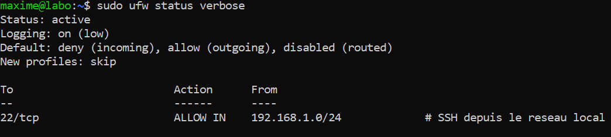
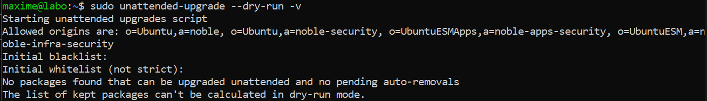
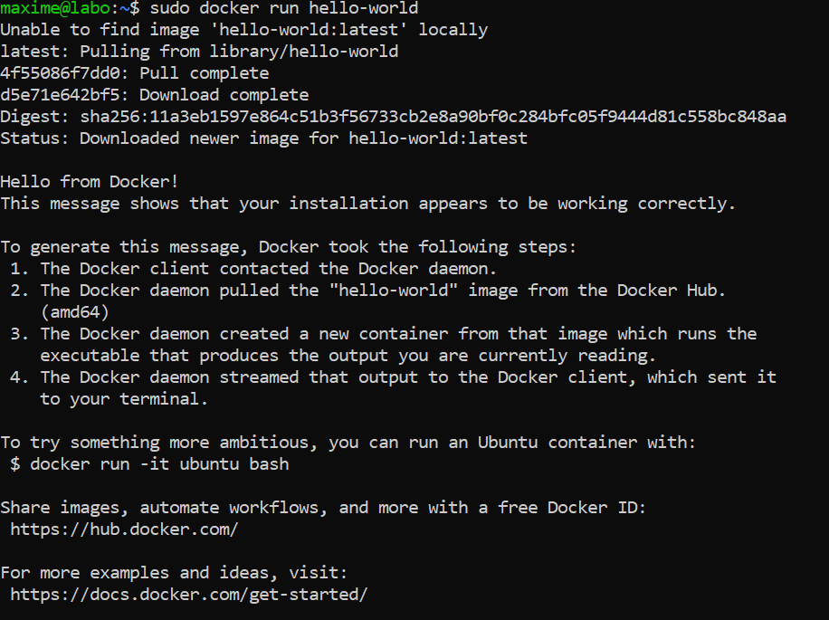
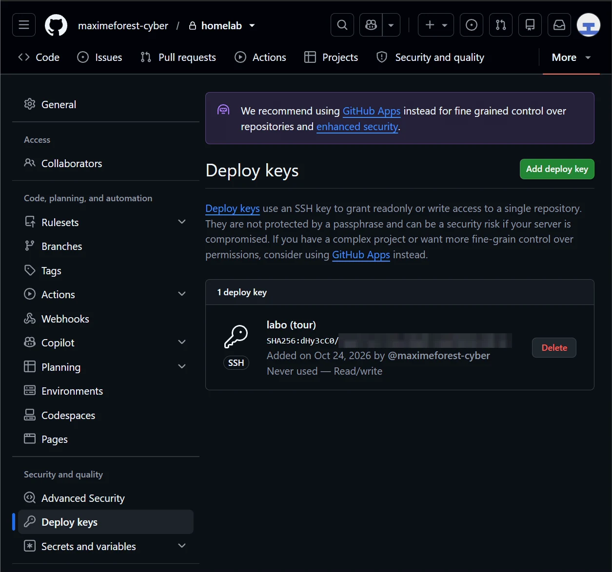
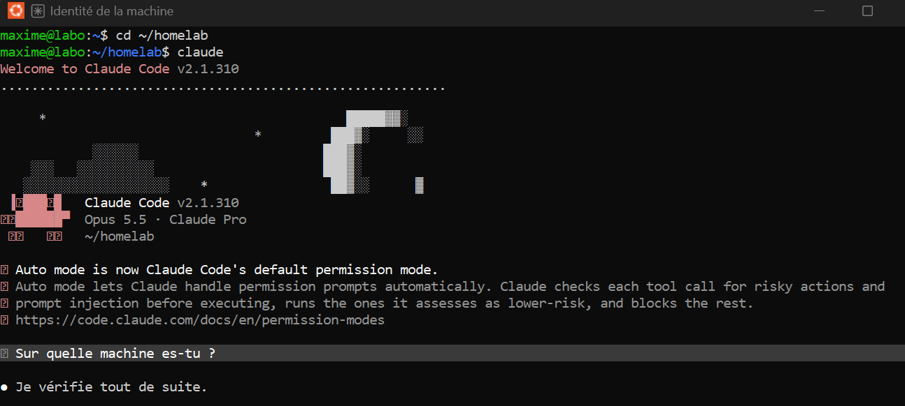
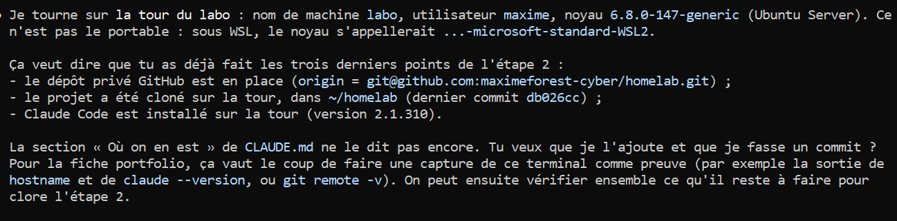

01Objectif
Préparer le serveur labo (installé à l'étape 1) pour la suite du projet :
- le protéger : pare-feu, mises à jour de sécurité automatiques ;
- installer les outils : Python 3, Git, Docker ;
- mettre le projet dans un dépôt Git privé, pour le travailler aussi bien depuis mon PC portable que depuis le serveur ;
- installer Claude Code sur le serveur, pour être assisté directement sur la machine dans les étapes suivantes.
02Schéma et technologies
┌──────────────────────────────┐
│ GitHub : dépôt PRIVÉ homelab│
└───▲──────────────────────▲───┘
clé du compte │ │ clé de déploiement
(avec phrase │ push / pull │ (ce dépôt seulement)
de passe) │ │ clone / pull / push
┌──────────────┴────┐ ┌──────┴────────────────────┐
│ PC portable (WSL2)│ SSH │ Tour « labo » 192.168.1.49│
│ 192.168.1.58 ├─────────►│ ufw : seul le port 22 │
└───────────────────┘ port 22 │ depuis 192.168.1.0/24 │
│ Docker, Python, Git, │
│ Claude Code, ~/homelab │
└───────────────────────────┘| Rôle | Technologie |
|---|---|
| Pare-feu | ufw 0.36 (interface simple pour le pare-feu du noyau Linux) |
| Mises à jour de sécurité | unattended-upgrades 2.9 |
| Langage des scripts d'audit | Python 3.12.3 |
| Gestion de versions | Git 2.43, dépôt privé GitHub |
| Conteneurs | Docker Engine 29.9.2 et Docker Compose v5.6.1 (dépôt officiel de Docker) |
| Assistant | Claude Code 2.1.310 (installeur officiel, sans droits administrateur) |
03Configuration
Pare-feu
sudo ufw default deny incoming # tout ce qui entre est bloqué
sudo ufw default allow outgoing # le serveur peut sortir (mises à jour)
sudo ufw allow from 192.168.1.0/24 to any port 22 proto tcp comment 'SSH depuis le reseau local'
sudo ufw show added # vérifier la règle AVANT d'activer
sudo ufw enableLa règle SSH est ajoutée et vérifiée avant l'activation : sinon, le pare-feu coupe ma propre connexion et le serveur, sans écran, devient inaccessible. La règle n'accepte que mon réseau local ; le réseau du VPN de la Freebox sera ajouté à l'étape 3.
Mises à jour de sécurité automatiques
unattended-upgrades était déjà actif à l'installation. J'ai vérifié :
- les origines autorisées : noble-security et les correctifs ESM d'Ubuntu ;
- le minuteur quotidien (systemctl list-timers apt-daily*) : comme il est « persistant », une vérification manquée pendant que le serveur est éteint est faite au démarrage suivant ;
- le journal /var/log/unattended-upgrades/ et un essai à blanc (--dry-run).
Le redémarrage automatique reste désactivé : le serveur est souvent éteint, et le nouveau noyau est pris en compte au démarrage suivant.
Docker Engine
Installation depuis le dépôt officiel de Docker (et non Docker Desktop, ni le paquet docker.io d'Ubuntu, moins à jour) :
sudo install -m 0755 -d /etc/apt/keyrings
sudo curl -fsSL https://download.docker.com/linux/ubuntu/gpg -o /etc/apt/keyrings/docker.asc
echo "deb [arch=amd64 signed-by=/etc/apt/keyrings/docker.asc] https://download.docker.com/linux/ubuntu noble stable" | sudo tee /etc/apt/sources.list.d/docker.list
sudo apt-get update
sudo apt-get install docker-ce docker-ce-cli containerd.io docker-buildx-plugin docker-compose-pluginLa clé de signature garantit que les paquets viennent bien de Docker. Mon utilisateur n'est pas dans le groupe docker : ce groupe donne en pratique les mêmes droits que root, donc les commandes Docker passent par sudo.
Dépôt Git privé
- .gitignore écrit avant le premier commit : secrets (.env, clés, fichier Wi-Fi), données des prospects (RGPD), bases SQLite et sauvegardes.
- Relecture des fichiers avant l'envoi : aucun mot de passe, aucune clé, aucune adresse IP publique.
- Dépôt créé en privé sur GitHub, envoyé depuis le portable avec la clé SSH de mon compte.
Accès du serveur au dépôt : clé de déploiement
Sur le serveur, une clé SSH dédiée (~/.ssh/github_homelab) est enregistrée sur GitHub comme clé de déploiement : elle ne donne accès qu'à ce dépôt, pas à mon compte entier (principe du moindre privilège). Si le serveur était compromis, je n'aurais qu'à supprimer cette clé sur GitHub, sans toucher à mes autres dépôts.
~/.ssh/config sur le serveur :
Host github.com
IdentityFile ~/.ssh/github_homelab
IdentitiesOnly yesL'empreinte du serveur GitHub enregistrée sur la tour a été comparée à celle que GitHub publie dans sa documentation (SHA256:+DiY3wvv…).
Claude Code sur le serveur
Installeur officiel, dans le dossier de l'utilisateur (~/.local/bin), sans sudo. Le serveur n'a pas d'écran : la connexion au compte se fait par un lien ouvert dans le navigateur du portable, puis un code recopié dans le terminal SSH.
04Tests réussis
| Test | Résultat attendu | Résultat obtenu | Preuve |
|---|---|---|---|
| Pare-feu actif | Status: active, entrée refusée par défaut, port 22 autorisé depuis le réseau local | Conforme | Fig. 1 |
| SSH après activation du pare-feu | Nouvelle connexion ssh labo acceptée | Conforme | — |
| Mises à jour automatiques | Origines de sécurité chargées, essai à blanc sans erreur | Conforme | Fig. 2 |
| Docker | Message Hello from Docker! | Conforme | Fig. 3 |
| Clé de déploiement | Clé « labo (tour) » en lecture/écriture, même empreinte que sur le serveur | Conforme : SHA256:dHy3cC0/… | Fig. 4 |
| Clone sur le serveur | GitHub reconnaît maximeforest-cyber/homelab, même commit que sur le portable | Conforme | — |
| Droit d'écriture du serveur | git push --dry-run accepté | Conforme | — |
| Claude Code sur le serveur | Lancé dans ~/homelab, il confirme tourner sur labo | Conforme | Fig. 5, 6 |












05Problèmes rencontrés et solutions
| Problème | Cause | Solution |
|---|---|---|
| sudo: a terminal is required to read the password | Commande lancée depuis Claude Code sur le portable, qui n'ouvre pas de vrai terminal : sudo ne peut pas demander le mot de passe | Les commandes sudo se tapent dans un onglet de terminal à part, connecté en ssh labo |
| Risque de se bloquer dehors en activant le pare-feu | Le pare-feu bloque tout par défaut, y compris le SSH | Règle SSH ajoutée puis vérifiée (ufw show added) avant ufw enable, puis nouvelle connexion testée |
| Après l'installation, « ~/.local/bin n'est pas dans le PATH » | L'installation est faite dans une session non interactive ; le dossier n'est ajouté par ~/.profile qu'à la connexion | Rien à modifier : après reconnexion SSH, claude est trouvé |
Points de vigilance pour la suite :
- les ports ouverts par Docker pour un conteneur passent par-dessus ufw : à l'étape 10, chaque port publié sera limité au strict nécessaire ;
- les paquets Docker ne font pas partie des mises à jour automatiques : ils sont mis à jour avec apt upgrade, à la main ;
- deux machines travaillent sur le même dépôt : faire un git pull avant de commencer, et travailler d'un seul côté à la fois.
06Ce que j'en retiens
- Ne jamais se couper l'accès : autoriser et vérifier le SSH avant d'activer le pare-feu.
- Moindre privilège : clé de déploiement limitée à un seul dépôt, utilisateur hors du groupe docker.
- Vérifier avant de faire confiance : clé de signature du dépôt Docker, empreinte du serveur GitHub.
- Les secrets hors de Git dès le départ : le .gitignore est écrit avant le premier commit, pas après une erreur.